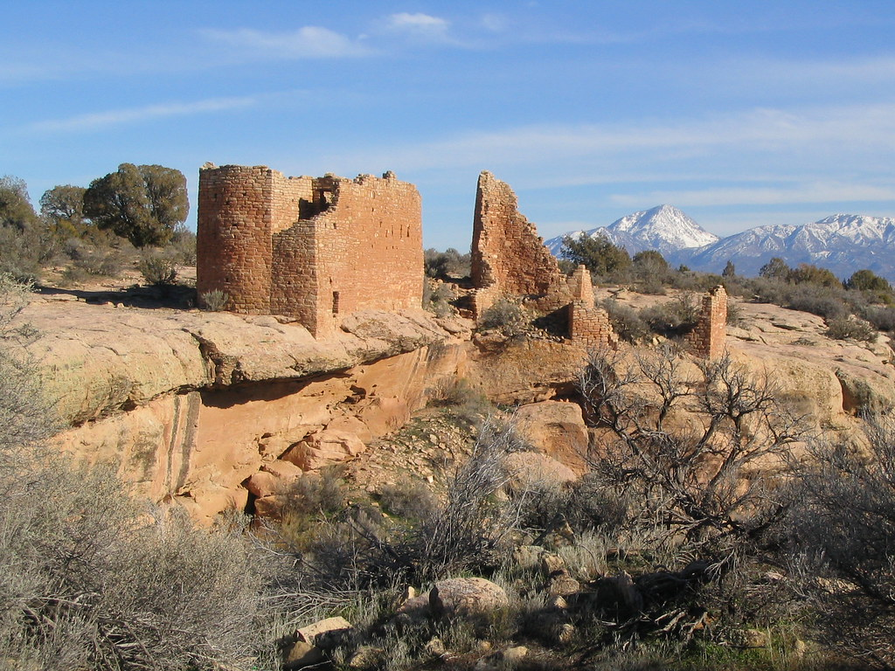

|  |
Hovenweep National Monument
By Leia Reclusado
These ancient Pueblo ruins include towers that remind visitors of European castles.
Straddling the Utah-Colorado border, the ruins were built about the same time as medieval fortresses.
The largest and most accessible of the six units of ruins is Square Tower, where several well-preserved structures are located. The area was home for several prehistoric farming villages.
Throughout the ruins, visitors may find castles, towers, check dams (for irrigation), cliff dwellings, pueblos and houses. Petroglyphs (rock art) can also be found in the area.
|